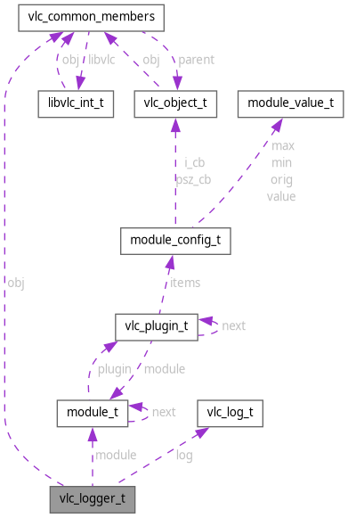

vlc_logger_t Struct Reference
Collaboration diagram for vlc_logger_t:

Data Fields | |
| struct vlc_common_members | obj |
| vlc_rwlock_t | lock |
| vlc_log_cb | log |
| void * | sys |
| module_t * | module |
Field Documentation
◆ lock
| vlc_rwlock_t vlc_logger_t::lock |
Referenced by vlc_LogDeinit(), vlc_LogInit(), vlc_LogPreinit(), vlc_LogSet(), and vlc_vaLogCallback().
◆ log
| vlc_log_cb vlc_logger_t::log |
Referenced by vlc_LogDeinit(), vlc_LogEarlyOpen(), vlc_LogInit(), vlc_LogPreinit(), vlc_LogSet(), and vlc_vaLogCallback().
◆ module
| module_t* vlc_logger_t::module |
Referenced by vlc_LogDeinit(), vlc_LogInit(), and vlc_LogSet().
◆ obj
| struct vlc_common_members vlc_logger_t::obj |
Referenced by vlc_LogEarlyClose().
◆ sys
| void* vlc_logger_t::sys |
Referenced by vlc_LogDeinit(), vlc_LogEarlyOpen(), vlc_LogInit(), vlc_LogSet(), and vlc_vaLogCallback().
The documentation for this struct was generated from the following file:
- src/misc/messages.c
Generated by